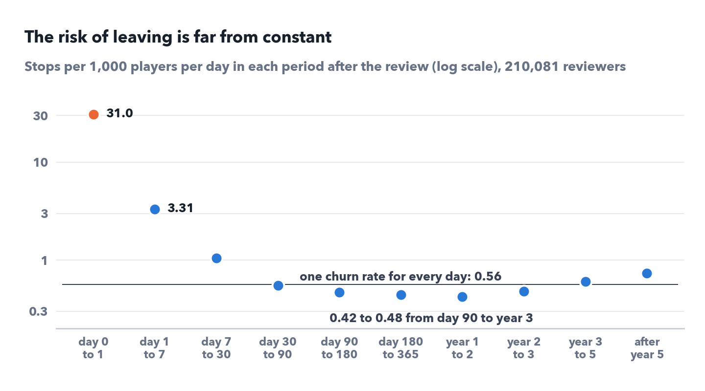
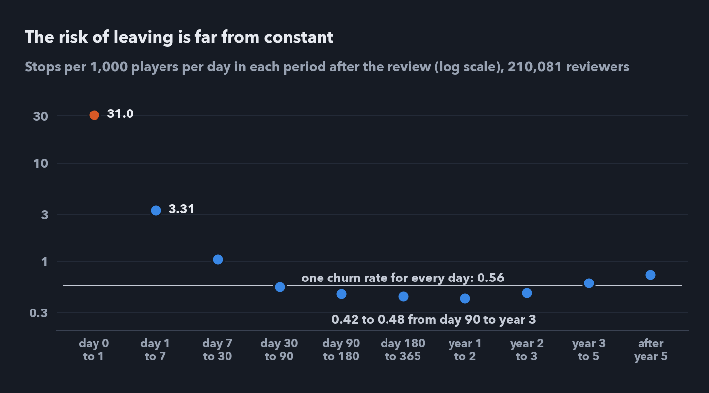
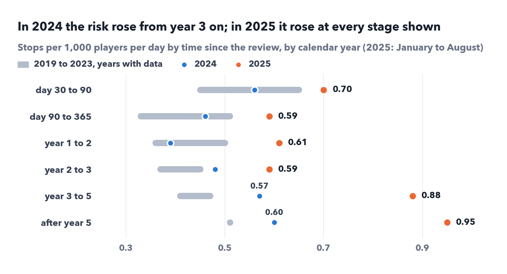
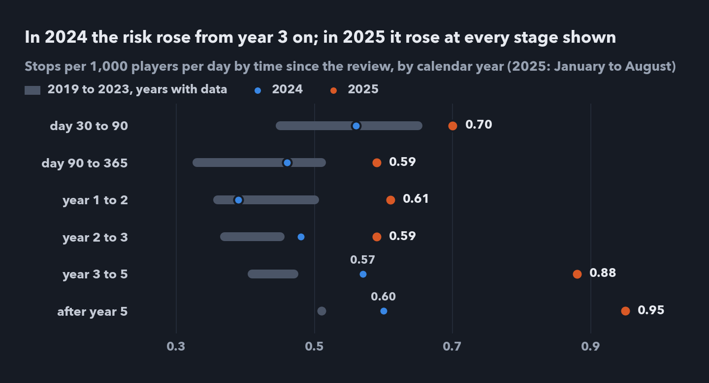
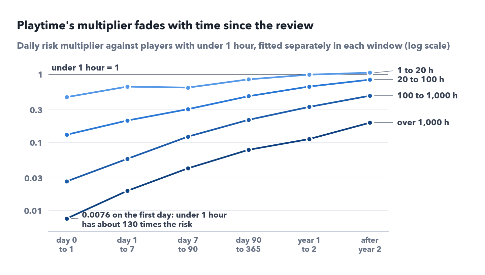
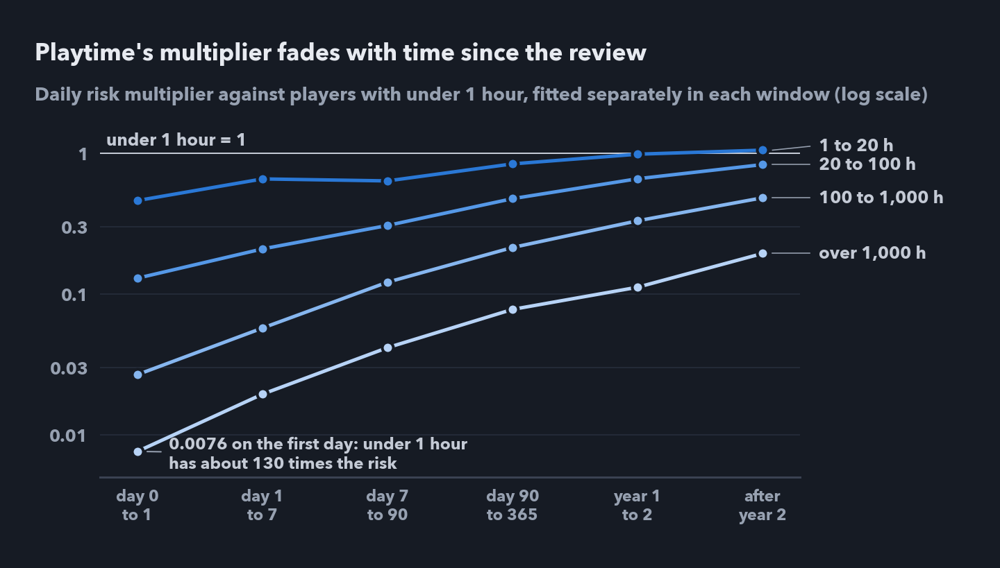
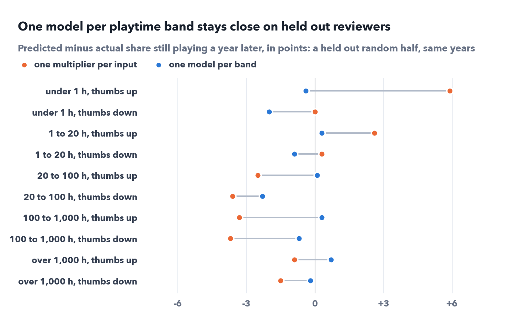
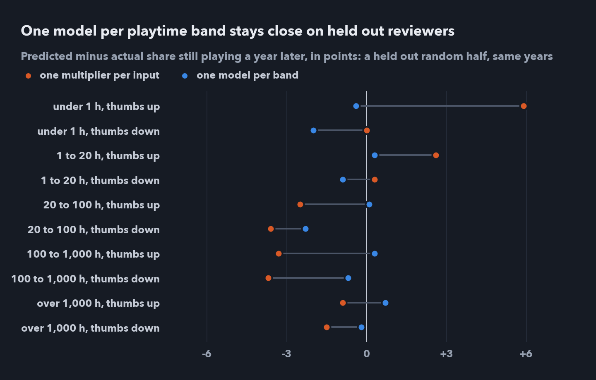
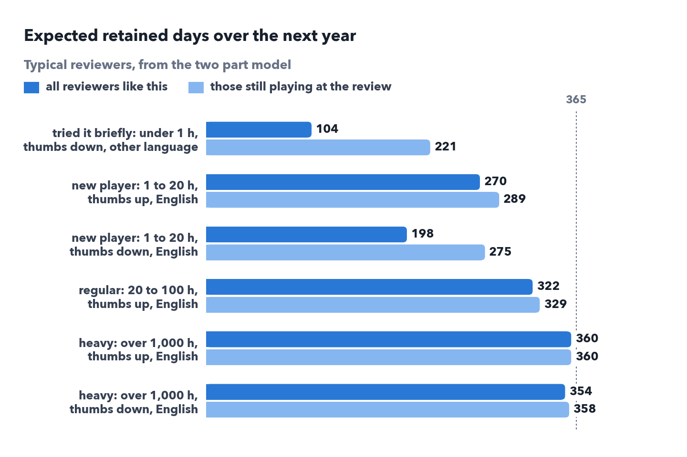
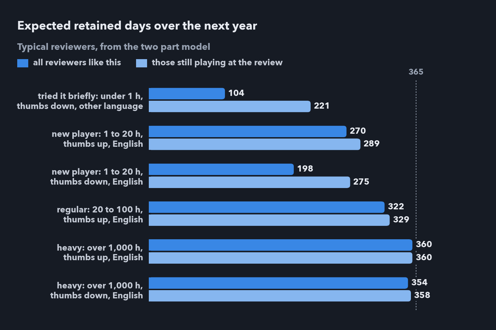

VRChat retention case study | Part 1: Who stays | Part 2: Who leaves sooner | Part 3: A fair test
Part 1 described retention with curves. Here I model the daily risk of leaving: its shape over time, a shift in 2025, and how playtime, the thumbs and language act together once each is held fixed. Then I test the final model on reviewers it was not fitted on, and on reviewers from later years.
At a glance
Every model here has two parts: the share already gone at time zero, reviewers whose last observed session came before the review (8.6% in Part 1), and a daily risk of leaving for everyone else. The natural first model for the risk is the one most dashboards use: a single churn rate. Fitted to the 210,081 reviewers still playing at time zero, it is 0.56 stops per 1,000 players per day. It gets the shape wrong: at day 90 it says 86.9% are still playing against the real 82.1%, and at three years 49.5% against 52.1%. Measuring the risk separately in ten periods, stops divided by days watched in each, shows why.


The first day needs a closer look. Half of its stops, 3,249 of 6,341, had their last session within an hour after the review, and about as many already gone reviewers, 2,934, had theirs in the hour before it. The spike is consistent with reviews written during what turned out to be a final session; whether such a reviewer counts as already gone or as a first day stop is a matter of minutes.
The standard two parameter survival curves, the Weibull, log normal and log logistic, can't follow this shape either, because the risk is extremely high for a few days and then flat for years. The best of them by AIC, the Weibull, misses the real curve by 5.5 points on average, the average gap ignoring sign over days 1 to 2,500, more than the single churn rate's 1.7, because it wins on the first months and loses on the years after; it puts one year retention at 67.2% against 72.5%. A piecewise constant risk with ten periods misses by 0.16 points on average, has the lowest AIC (1,561,185 against the Weibull's 1,576,691), and gives the same answers with 5 or 20 periods.
The shape also changes where retention work can reach people. The first day's risk is about 70 times the steady level, yet in headcount more leaving happens later: about 10,300 stops in the first week against about 20,000 between day 90 and year 1. Summed over the curve, the average reviewer has 288 retained days in the next 365, the restricted mean survival time. Retained days are the calendar days from the review to the last observed session, capped at the horizon, here 365: they measure how long people stay, not how many days they play. A single churn rate says 302.
A single churn rate flatters early retention and undervalues the players who stay, so everything below uses a risk that changes with time since the review. Half of the first day's stops had their last session within an hour of the review, so help that waits for a later login can't reach them.
The small rise after year 3 needed a second look. Only people who reviewed long ago reach the late stages, and they reach them in recent calendar years, so time since the review and the calendar are tangled. They can be separated because different reviewers reach the same stage in different years: measure each stage's risk in each calendar year.


Up to 2023 the risk is about the same at every stage within a year (0.33 to 0.51 in 2023), so after the first months time since the review matters little. In 2024 the stages from year 3 on already rise, to 0.57 and 0.60, and 2025 is higher at every stage from day 30 on, highest three or more years after the review, at 0.88 and 0.95. Recent stops have had the least time to be confirmed, so I repeated the comparison counting only stops followed by at least 18 months without play (540 days) before the download on 28 August 2026. That limits 2025 to stops up to 6 March, so I compare 1 January to 6 March of 2025 with the same weeks of 2024: from year 3 on, 2025 still sits well above, 0.81 and 0.96 against 0.53 and 0.57. Each 2025 stop in that window has 18 to 20 months of silence behind it against 30 to 32 for 2024, so a break of 18 to 30 months counts as a stop in 2025 but not in 2024. The data are consistent with a change that reached reviewers three or more years past their review in 2024 and every stage in 2025; they can't tell whether it came from VRChat, from who plays through Steam or from where people play.
After the first months, the risk varied more with the calendar year than with time since the review, so a model fitted on earlier years would be too hopeful about recent reviewers while the shift lasts. The forward test in section 4 fits this, though 2023 reviewers, whose first year ended before 2025, did worse too.
Part 1 compared inputs one at a time. To hold the others fixed I fitted a Cox model, whose hazard ratios are multipliers on the daily risk, with the baseline over time left free, to the 210,012 reviewers still playing at time zero (69 with no recorded playtime are left out). Using the ten periods as the baseline instead gives the same multipliers to within 0.003. The first fit ranked the inputs: over 1,000 hours had a hazard ratio of 0.089 against under an hour, about one eleventh of the daily risk, a thumbs down 1.14 and another language 1.15. Two checks then changed the picture.
First, not every thumbs down means the same. Setting the July 2022 protest week apart raises the thumbs down multiplier to 1.24 and gives the protest week 0.73, so a protest thumbs down came to about 0.91: no extra risk in the first two years, as the time windows below show. Second, the model assumes proportional hazards, one multiplier for every day after the review. Refitting it in six windows shows that playtime's multiplier changes sharply with time since the review.


Under 1 hour against over 1,000 hours is about 130 times the risk on the first day and about 5 times after year two, so a single multiplier of about 0.09 is right for no window. Two mechanisms are consistent with this: playtime at review is a snapshot that ages, and the lightest players who will leave go first, so those who remain are keener. A spline for playtime fits best by AIC and ranks people slightly better than five bands (concordance 0.692 against 0.682), but it still gives playtime one multiplier for every day after the review. The thumbs down and language multipliers move much less across the windows, between about 1.1 and 1.4, so one value per band is a fair summary for them.
I handle this with one small Cox model per playtime band, a step beyond stratifying by band: each band gets its own baseline over time, and also its own multipliers for the thumbs, language and protest week. Inside the bands the hazard ratio for a thumbs down rises with playtime, from 1.08 (95% confidence interval 1.02 to 1.15) under 1 hour through 1.21 for new players to 1.47 (1.32 to 1.64) over 1,000 hours. In absolute terms the same multipliers mean very different things, because heavy players' baseline risk is so low: applied to each band's estimated baseline, 1.21 comes to about 5 more in 100 new players gone within a year, close to Part 1's 4 point gap with the protest week left out, while 1.47 comes to about 1 more in 100 heavy players.
Another language goes with higher risk mainly under 20 hours (1.23 under 1 hour, 1.19 at 1 to 20 hours), a little at 20 to 100 hours (1.09), and not from 100 hours up. The protest week sits at 0.62 to 0.75 in every band; its multiplier fades too, from 0.27 on the first day to 1.0 after year two, so one value per band is an average. Comparing people only within the same start year shrinks the thumbs down multipliers by 0.07 to 0.10, because negative reviews became two to four times as common after 2022 and later start years also had higher risk, so I read them as approximate. I still keep start years out of the model because their historical effects may not persist: for a future year the start year is known, but its new shift is not; section 4 measures what that costs.
The other half of the model, the share already gone at time zero, is where the thumbs say the most: from 1 hour of play up, thumbs down reviewers are 3 to 5 times as likely to have already stopped.
Playtime at review says most about the first weeks after it, so forecasts beyond a few months would likely gain from fresher activity data than a review provides.
A model earns trust on data it wasn't fitted on, so I ran two tests. The first fits both versions on a random half of the reviewers and predicts the share still playing a year later for ten groups in the other half, the five playtime bands each with a thumbs up or down.


These ten groups are the per band model's own cells, so this test mainly shows that it doesn't overfit, and it checks the bands and the thumbs, not every input. Its largest miss, 20 to 100 hours with a thumbs down, falls from 2.3 to 0.1 points outside the protest week, consistent with one protest value per band averaging a multiplier that fades. The single multiplier model is mostly too hopeful about players under 20 hours and too gloomy about those with more, the fading multiplier again. Both versions rank individuals equally (concordance 0.714 for both, counting the already gone as the earliest stops), so the gain is in the group shares a plan would use. For everyone together, the per band model predicts 72.7% against the real 72.5%.
The second test is a cohort holdout: it fits the model on reviewers whose clock started in 2019 to 2022 and predicts those from 2023 and 2024. It is closer to real use, though not a clean forecast of the future, since the earlier reviewers are still followed through the same calendar years as the later ones. The model predicted 77.4% still playing a year later against a real 73.1%, and missed the ten groups by 4.1 points on average, about the same as the single multiplier model's 4.2, though its worst group missed by 8.8 points against 15.0. The period model with no inputs came closer overall, 74.4%.
Two shifts pulled opposite ways. Reviewers from 2023 and 2024 arrived with more hours, 13.4% over 1,000 hours against 9.4%, partly because recent edits reset playtime (Part 1), though never edited reviews shift too, from 8.0% to 9.8%. So the model with inputs expected them to stay longer, yet inside every band they did worse, the lighter bands most in points: 1 to 20 hours went from 61.9% still playing a year later to 58.1% for 2023 and 53.1% for 2024, under 1 hour from 33.9% to 24.6% for 2024, and the decline holds for never edited reviews too. The model with no inputs saw neither shift, and the two roughly cancelled, which is why it came closer; the overall share barely moved, 74.5% to 73.1%. Both sit above Part 1's pooled 72.5%, which also counts 2018, a wave of new players at 57.8%, and 2025 at 70.5%.
An overall retention number can hold steady while every group gets worse. Retention should be tracked inside playtime bands, and the model refitted as each year arrives.
Put together, the two parts, the share already gone in each of 20 groups of band, thumbs and language and the per band risk, turn three facts known at time zero into expected retained days over the next year, the calendar days from the review to the last observed session.


For a typical new player, a thumbs down is associated with about 70 fewer retained days than a thumbs up, 198 against 270. Among those still playing at the review the gap is only 14 days, 275 against 289, so about 60 of the 70 come from people who had stopped before they wrote or edited. For new players most of the gap in days is a look back, and help can only reach the smaller, live part. Heavy players stay near the maximum either way, at 360 and 354 days.
I can say
I cannot say
In one sentence
The risk of leaving is steep for a few days and flat for years, rose from year 3 after the review in 2024 and at every stage from day 30 on in 2025, and varies with playtime most strongly in the first days; one small model per playtime band describes reviewers from the same years to within about a point but missed reviewers from later years by about 4.